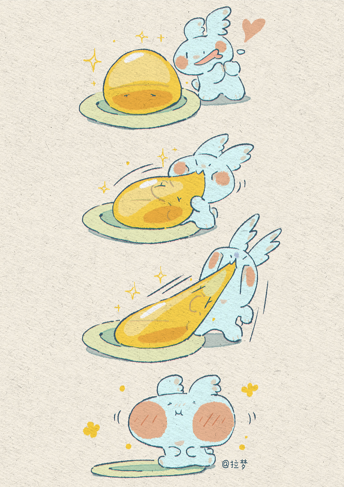

Huo Mengyu(霍 梦钰)
|  |
Tel: (86) 173 3514 8589
Email: 2191421886@stu.xjtu.edu.cn
Ordinary Differential Equation (98, top 1%)
Real Analysis (93)
Complex Analysis (91)
Mathematical Analysis 1 (89)
Advanced Algebra 1 (87)
Mathematical Analysis 2 (85, top 4%)
Advanced Algebra 2(87)
Mathematical Analysis 3 (81)